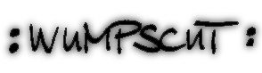

|  | |
Wumpscut es el proyecto personal de Rudy, y se podría definir su sonido como dark-EBM con influencias de la clásica música industrial.
Se dice (se rumorea) que Rudy y Claus Larsen (de Leæther) no se llevan muy bien, aunque el estilo y el sonido han sido en algunos LPs muy muy similares. ¿Quién copió a quien. |